协同设计
通常对于大型装配体的设计项目来说，一个总装文件可能会需要被多人打开查看或编辑。而计算机对文件的读写是又唯一性的要求的，所以你可能会遇到类似文件被占用的问题。而本文将列举几种协同设计，来控制文件的读写以避免文件占用的情况。分别是：
- 协作设置
- PDM
- 轻化模式
协作设置
网盘模式下，一般是通过共享文件夹的方式，共享其中文件。这将出现一种情况（问题）：就是大家都能看到文件并可能会在同一时刻都编辑到文件。这将造成文件占用的情况。在打开时会提示如下：
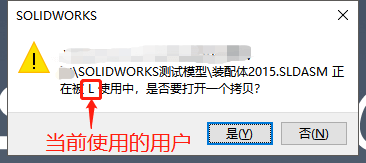为了避免文件占用的问题，首先，我们需要了解下SOLIDWORKS软件内是如何规定协作的状态的：分别是【使之为只读】和【获取写入访问】状态。通过“只读”和“写入”的文件状态，来控制当前用户文件的编辑权限。文件状态可以有多个用户“只读”，唯一用户“写入”作设计编辑。
graph TB 协作装配体-->使之为只读-->用户1 协作装配体-->获得写入访问-->唯一编辑用户 使之为只读-->用户2 使之为只读-->用户3
默认【使之为只读】/或【获取写入访问】是没有在文件菜单栏显示的，需要我们勾选【系统选项-协作】“为多用户环境添加快捷键菜单项目”，来开启该命令选项。
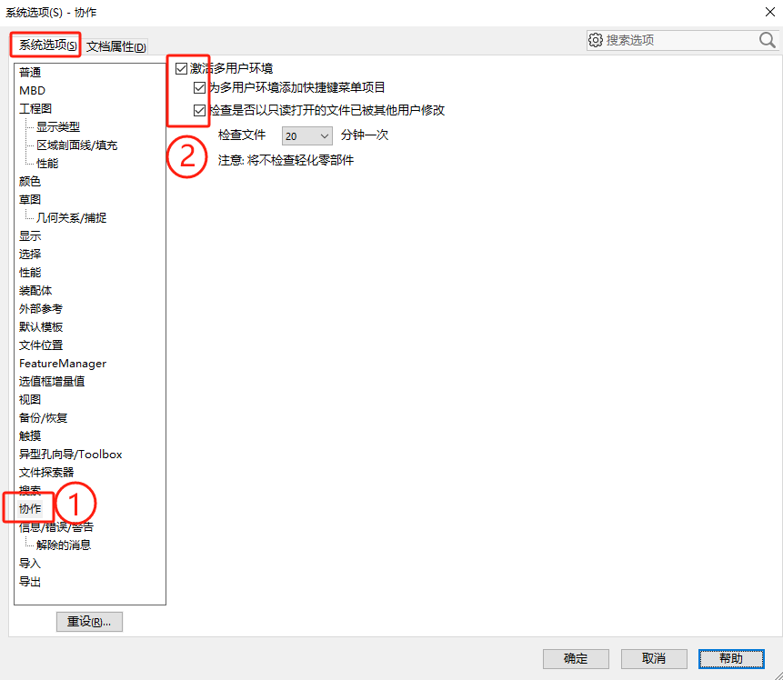协同原则
其协同的原则是通过在SOLDIWORKS软件内操作【文件-使之为只读】/或【文件-获取写入访问】来控制文件状态。
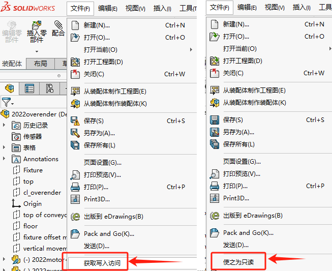协同操作
当多电脑打开文件时，首先打开加载文件的电脑用户将获得文件的编辑权，此时其他用户打开该文件时则会提示：当前文件被“xxx”使用中，是否打开一个拷贝文件。
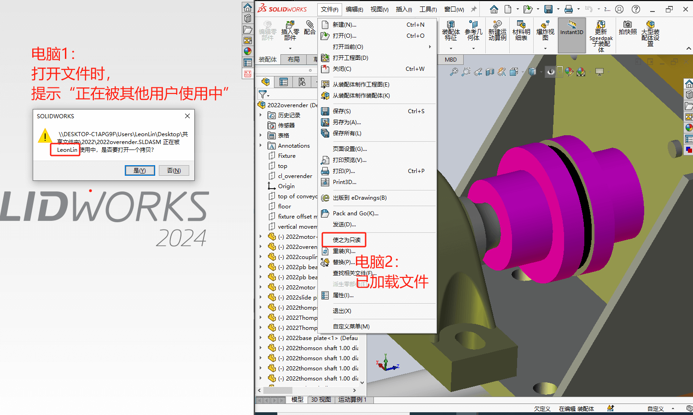此时，为了在电脑1中打开文件，我们需要联系电脑2用户，将其正在打开的装配体文件操作【文件-使之为只读】，把电脑2环境下的文件状态修改成“只读”。
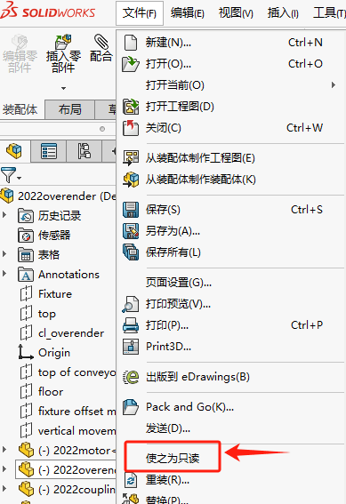然后在电脑1环境下，就能正常打开该装配体编辑了。其他零部件的读写状态操作类似。
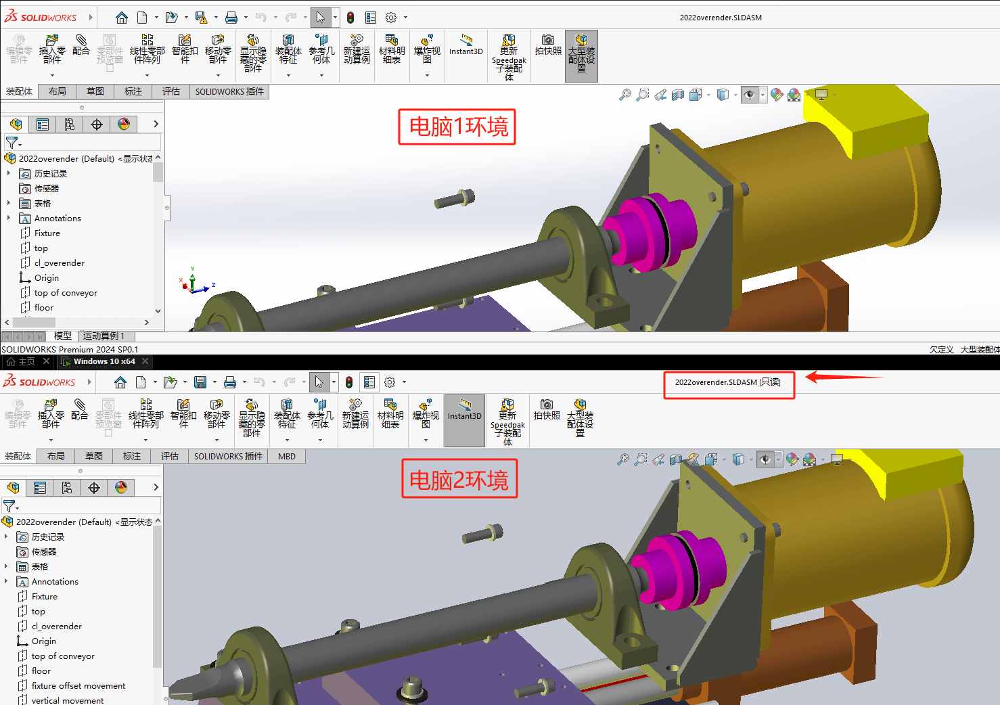PDM
当然原生软件的【协作】设置可以实现一定程度的协同设计，但在文件状态可视化、状态操作、文件更新上存在一定局限。这里我们会推荐使用PDM系统来管理我们的协作环境。
PDM简介
这里补充下SOLIDWORKS PDM的一些简介：其是一种产品数据管理系统（PDM）的软件解决方案。它帮助企业更有效地管理和共享产品数据，通过自动化的流程更好地协同产品开发与销售环节，使产品具有更好的质量、更低的价格和更短的开发周期。
PDM应用对象为：工程师，设计师，制造商，供应商，销售人员，市场人员以及工程制造等相关人员。
PDM管理数据包括：三维模型，工程图纸，项目计划，产品规格，数控加工程序，分析结果，函件，BOM等其他类型文件。
协同原则
按谁”检出”谁编辑的方式，检出权限的用户可以在当前电脑内编辑检出的零件。
在PDM系统里，你可以清楚看到用户检出的情况。（例如：Admin检出编辑总装文件，其他用户只读总装文件，但可以检出其他零件做编辑）
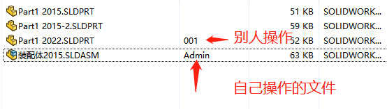
协同操作
其他用户对零部件编辑完成后，需要”检入”后，用户通过获取最新版本来更新零部件到总装配体里显示。大致操作如下：
- 可在PDM插件界面进行”检出/入”操作。检出者将获得对应检出文件的编辑权限；
设计操作完成后，需检入对PDM存档文件进行更新；（检入似乎是必要的）
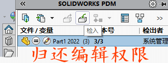其他用户可以观察到，该文件的工作版本已经发生升版，并且本地文件版本较旧的提示。此时可在插件界面进行”获取最新版本”来更新总装的变化，达到协同设计的效果。
轻化模式
协同编辑时需使用【轻化模式】，以保证装配体的零部件是类似“只读”状态的方式加载到装配体，避免文件占用的情况。为此，我们可以设置【系统选项-性能-以轻化模式加载零部件】，以默认轻化的方式打开装配体，使零部件轻化。
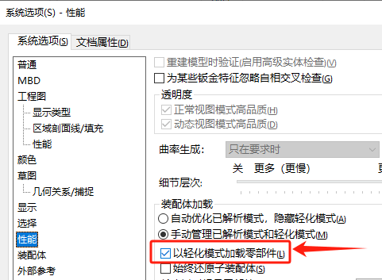如果是你是以”轻化模式”打开总装，其他以“还原模式”打开的用户就可以打开编辑零部件。如果是还原状态的零部件，则可以手动选择【右键-设定为轻化】。
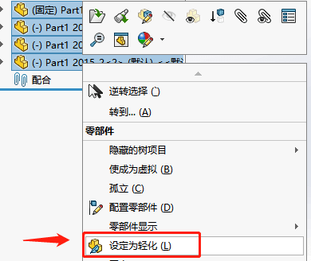还原零部件后，文件夹出现”~$xxxx”文件缓存，（即已在此电脑加载缓存，其他用户电脑使用该文件时会出现如”还原状态”下的文件被占用操作提示）
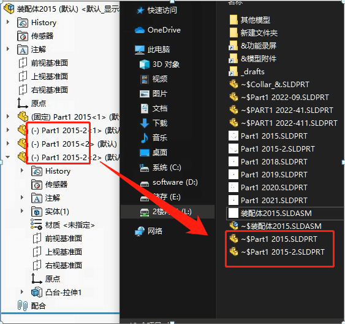轻化下的零件在文件夹不会产生”~$xxxx”的缓存（即不会占用文件操作，其他位置的用户即可在其他电脑进行编辑操作）
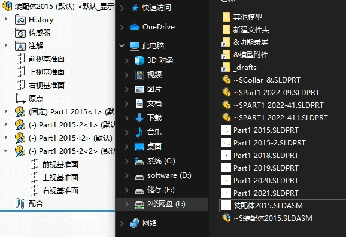